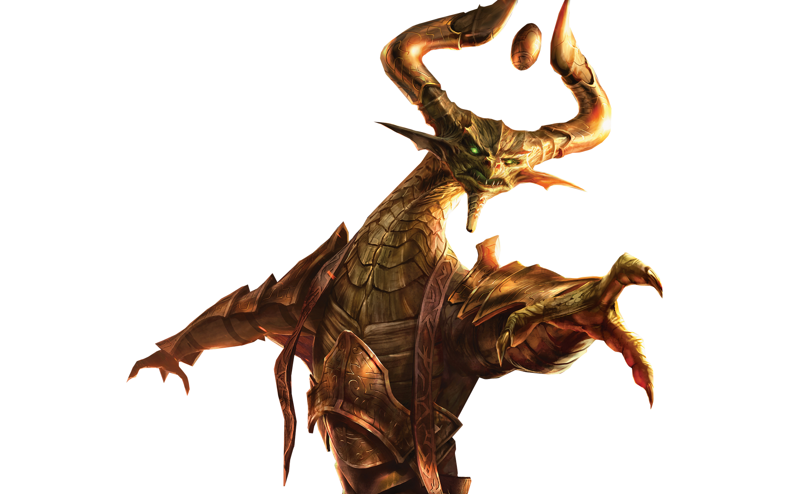

On the left, you will see an accurate representation of what i would look like, that is if stereotypes around hobbies were to be believed! On this page, i've listed a couple of my hobby-games. Aside from them though, i've got a few more, such as cooking, reading(comics, manga, manhwa, webtoons, novels...), and things like that.

One of my hobby-games is the game, Magic: The Gathering It is a card game, semi-comparable to games such as Yu-Gi-Oh. It also happens to be the oldest card game of its type. (TCG). I have been playing it since around the year 2018, and am quite alright at it. One of my favorite characters from the game is Nicol Bolas, seen here on the left.
Another one would be Osu! Osu! is a rhythm game where you click circles, and slide sliders to the beat. I've started with playing this in late 2014, and had gotten really good by the time i quit, making it into the top 400 of my country. As much as i do enjoy playing it every now and then, sadly it's time as a proper hobby are over.